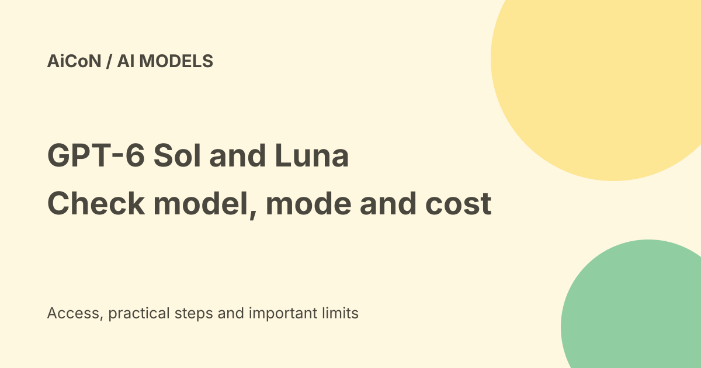

GPT-6 Sol and Luna: API costs, Work access and model-name limits
GPT-6 Sol and Luna are different OpenAI models for complex work and lower-cost high-volume tasks. Their API pricing is usage-based. The official launch also describes ChatGPT Work and Codex access, including a desktop Luna route for Free/Go users, while saying they are not available in Chat.

What are Sol and Luna?
OpenAI describes GPT-6 Sol for complex coding and agent workflows, and GPT-6 Luna for focused, high-volume tasks. Agents can call tools through a surrounding application; the model alone does not safely complete every workflow.
The current Sol page points to GPT-6.1 Sol as a newer model. This guide covers the original GPT-6 Sol and Luna names from the archive, not an assumed replacement. Compare exact model pages and actual workload results before switching.
Standard API prices
The exact model pages list these rates per one million text tokens. Tokens are pieces of text, not complete tasks or words.
| Rate | GPT-6 Sol | GPT-6 Luna |
|---|---|---|
| Input | $2 | $0.10 |
| Cached input | $0.20 | $0.01 |
| Cache writes | $2.50 | $0.125 |
| Output | $10 | $0.50 |
These are base Standard rates, not a fixed bill for a job. The general pricing table now prominently lists GPT-6.1 Sol; do not borrow its cached-input rate and label it GPT-6 Sol. Your selected model, endpoint and processing mode matter.
What can raise or lower the bill?
Both checked model pages say prompts with more than 272,000 input tokens are charged at twice the input and cache rates and 1.5 times output for the full request. The surcharge is not just on tokens above the boundary. Tool calls can add their own charges.
Batch and Flex are listed at 50% of Standard rates, while Fast is twice the applicable rates. Regional processing adds 10% where available. These modes have their own eligibility and service behaviour; a discount does not mean every interactive app can use the same route.
For a simple base-rate example with one million uncached input tokens and 100,000 output tokens spread across short requests, Sol costs $3 and Luna $0.15 before tool charges, taxes, retries or other fees. That example is arithmetic, not a quote for an Indian account or a one-million-input-token request.
ChatGPT Work, Codex and Chat are different
The official launch says Sol and Luna are available in ChatGPT Work and Codex for Plus, Pro, Business, Enterprise and Edu users. It says Free and Go users can access Luna in the desktop app, while these models are not yet available in Chat. Read the actual account interface rather than treating all ChatGPT surfaces as one feature.
The exact API model pages list the API Free tier as unsupported. That does not contradict a separate consumer desktop allowance. No account-specific quota, Indian rollout or desktop entitlement was tested here.
Developer integration limits
The model pages say use the Responses API for built-in tools and function calling. They limit Chat Completions function calling to the none reasoning setting. Reasoning settings, tools and structured-output requirements should be checked in your actual application.
Both pages describe text input/output and image input, with no direct audio or video support. A page's broad endpoint navigation is not evidence that this model supports every endpoint shown. Use the model-specific supported-feature section.
A careful comparison test
- Record the exact model identifier, processing mode and current rates.
- Choose a small permitted sample task with a clear success condition.
- Keep private data out of the test and leave external actions disabled.
- Measure answer quality, tool calls, failed retries and billed input/output/cache tokens.
- Check whether long-context thresholds or regional fees apply.
- Set budget controls before increasing volume, and review the final output before it affects work.
We did not connect an API key, run a billed request or inspect a user's plan. Model performance claims are OpenAI's descriptions, not independent tests by AiCoN.
India and privacy caveats
A global launch does not settle an Indian account's eligible products, billing or data-residency options. The checked pages specifically describe EU residency options; that is not an India-residency promise. Review the actual service agreement before sending workplace or customer data.
A low input rate can hide expensive output, tools and retries. Budget for the complete workflow rather than multiplying a headline price by an expected number of tasks.
Frequently asked questions
Is Luna a free API?
No. Its API page lists Free tier as unsupported; desktop consumer access is separate.
Are GPT-6 Sol and 6.1 Sol interchangeable?
No. Keep exact names, features and prices separate.
Does a large context window keep base pricing?
Not above the documented long-input threshold.
What changed since the earlier post?
This guide adds the official Work/Codex and desktop Luna routes, which the archive's API-only wording missed. It also adds cache costs, full-request long-context multipliers and the newer 6.1 Sol distinction.
Sources: Exact GPT6Sol model page · Exact GPT6Luna model page · Official launch and app availability · Current general API pricing. Checked 8 October 2026.